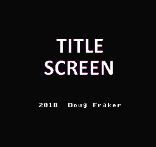
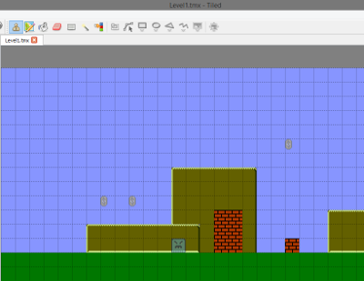
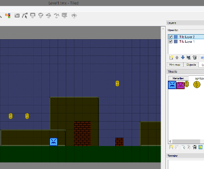
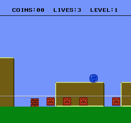
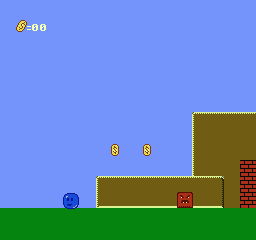

21、完成一个游戏
我要做的第一件事是标题屏幕。这部分快速搞定，毕竟只是为了展示一下。我用 NES screen tool创建了一个图，并保存压缩成 RLE.h文件 “title.h”。标题只是等待用户按下 START按钮，循环颜色让其显示不那么无聊。

temp1 = get_frame_count();
temp1 = (temp1 >> 3) & 3;
pal_col(3,title_color_rotate[temp1]);
title_color_rotate 是4种配色数组。
我不想一次创建一个room，所以我做了一个很长的 Tiled文件，并导出csv，然后用 CSV2C_BIG.py将其转变为数组。

(我原本在底部自动生成一个指针数组，但我最终没用他，删了以后做了一个更大的指针数组，包含了所有的关卡)
const unsigned char * const Levels_list[]={
Level1_0,Level1_1,Level1_2,Level1_3,Level1_4,Level1_5,Level1_6,Level1_7,
Level2_0,Level2_1,Level2_2,Level2_3,Level2_4,Level2_5,Level2_6,Level2_7,
Level3_0,Level3_1,Level3_2,Level3_3,Level3_4,Level3_5,Level3_6,Level3_7
};
我使用了2中敌人和2中硬币。
然后我在其上创建了一个包含所有sprite精灵对象的图片(背景透明)，在Tiled中将其作为单独的tileset导入，添加了另一个层放置Sprite精灵对象。我将敌人放在第二层(作为图块)，并导出另一个csv文件，然后我写了另一个.py文件 “CSV2C_SP.py” 来将他们转为数组。

我最终没有向这样使用。混合了硬币和敌人，我希望他们在不同的数组中。因此我将不同类型的对象剪切并粘贴到了2个不同的数组中。这时候.py文件的用途体现出来了。
这些数组可能需要再稍微编辑下
我做了2中敌人，怪物也会跟墙壁发生碰撞。最初我想用跟主角一样的代码，但我觉得这样的检查方式会太慢，所以我写了一个更简单的代码。
bg_collision_fast() 这个只会检查2个点，而不是4个点。
写的怪物的AI不是很好，他们只会X轴移动，Y方向不会动，如果放在一个平面上他们会像鬼一样飘在上面，以后我可能会优化一下这个逻辑。
另外一个敌人只是来回跳。下火时候会检查下面的地面，停到地面上，使用和主角相同的判断代码。
bg_check_low();
第二种硬币只是一种结束标记。我想我们可以添加一些到达关卡最后时候的音乐，不过目前只会让屏幕淡化成黑色。
添加不少模式，状态了。标题，游戏，暂停，结束，切换（一关结束到另一关）。
调试效果也挺好。我开始还担心跑过头了。
我用了gray_line() 来检查我们在屏幕上的距离。

我不想让敌人AI太复杂，也不想在一个屏幕上放置太多物体，这样会让我们的游戏变慢，所以我们需要测试，看我们的屏幕能够放多少个敌人。结果大概是7-8个，这比我想的要好很多。
最后，我将硬币数量作为精灵放到左上角显示，我没有放的太高，因为一些老电视可能看不到，距离顶端16个像素刚好。
最后差点忘了精灵shuffing代码。
重点！！sprite精灵页面中，每条水平线只能有8个精灵。我们必须在OAM缓冲区内对每个对象的位置做修改，这样就不会让敌人完全消失。
最简单的办法是每帧修改初始位置。而不是sprid=0,你可能会用sprid=rand8()*4,或者类似的方法，但这不是很好的方法。
我决定每帧以不同的顺序浏览敌人列表（并在精灵绘图代码的顶部保持sprid = 0）。
const unsigned char shuffle_array[]={
0,1,2,3,4,5,6,7,8,9,10,11,12,13,14,15,
15,14,13,12,11,10,9,8,7,6,5,4,3,2,1,0,
0,2,4,6,8,10,12,14,1,3,5,7,9,11,13,15,
15,13,11,9,7,5,3,1,14,12,10,8,6,4,2,0
};
第一遍，他会向前走0-15，然后是返回来。。。
我妈们要保证同一水平线上没有太多硬币。
我们的游戏有3个关卡，每关8屏。本来还可以更大一点。每个关卡需要2000个字节。我们剩下大概16000个字节，所以我们还能增加7-8个关卡，总共10个关卡。如果我们想要更多关卡，就要考虑不同的mapper或者使用压缩算法。

https://github.com/nesdoug/26_Full_Game/blob/master/full_game.c
https://github.com/nesdoug/26_Full_Game
差不多就这些了，去搞游戏吧。。。